Mes remerciements à David Eisenstat, ingénieur logiciel chez google à New York, pour son aide dans ce projet.
Etant donnee un nombre de point dans un plan et une distance d, on cherche la facon la plus optimale de de relier entre eux les points se trouvant à une distance au plus d. Le but final est de calculer la taille des composantes fortements connexes.
Dans ce rapport de projet d’algorithmique, je présente l’évolution de mon algorithme et les différentes approches pour résoudre le problème posé. Ainsi, la table de matière que je présente dans la page ci-après n’est autre que les algorithmes que j’ai utilisée et que j’ai amélioré au fur et à mesure.
La solution optimale que j’ai trouvée est donc le dernier point de la table de matière : triangulation de Delaunay. C’est cet algorithme uniquement que je remets sur Teide. Les autres parties sont donnés pour montrer l’évolution de mes approches.
En effet, je ne me contente pas seulement de présenter ma solution optimale, je présente aussi les performances des différents algorithmes, comment j’ai élaboré des tests pour mesurer ces performances, etc. Je donne aussi quelques preuves et théorèmes qui m’ont permis d’améliorer ou de trouver des faiblesses dans certains algorithmes.
La mesure des performances est faite sur un ordinateur HP, intel CORE I7, 8GB RAM et ayant comme seul OS KALI Linux. Les affichages se font soit avec tycat de terminology, gnuplot avec qterminal ou simplement la librairie MatPlotLib de Python. Les codes sont écrits avec Python 3.9.1.
Merci,
21 Fevrier 2021
Haroun Al Mounayar
Pour évaluer les performances, il faut écrire un programme create_test qui nous génère un fichier de points.
Or, on doit se poser la question : de quoi dépend le temps d’exécution de notre algorithme ? La réponse va constituer les entrées de notre programme create_test.
Notre algorithme dépend bien évidemment du nombre de points à étudier. Si on fixe le nombre de composantes connexe, on peut affirmer que notre algorithme ne dépend pas de la distance limite qui précise si deux points sont connectés ou non.
Enfin, il existe une dépendance vis-à-vis de distribution des points dans le plan. En effet même pour un nombre de points et un nombre de composantes connexes fixées, il existe plusieurs distributions de points possibles. Cependant on ne peut pas quantifier cette distribution de points mais on peut preciser dans notre algorithme la forme voulue.
Pour implémenter Create_test, l’idée est de fixer la distance à 1.
Ensuite on repartie aléatoirement le nombre de points (nbre_de_point) sur le nombre de composantes connexes (nbre_de_cc). Par exemple nbre_de_point = 10 et nbre_de_cc = 3 une répartition possible est [6,3,1].
On génère ensuite les points aléatoirement dans des « fenêtres » de taille 1 × 1 et on translate ces fenêtres aléatoirement selon x et y d’un nombre pair pour éviter la collision entre fenêtre.
Avec python on a le programme suivant :
Avec gnuplot le lancement du programme donne le fichier suivant :
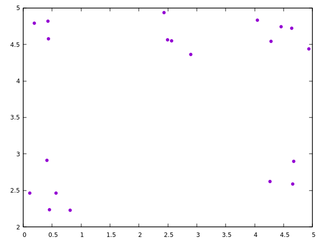
Dans cette section, on va créer un premier algorithme naïf pour se donner une idée et visualiser. Une façon de faire et de calculer toutes les distances entre les points. Si c’est plus petit que la distance limite, on relie les deux points ensembles.
La fonction en python se traduit donc comme se suit.
Le lancement du programme dans terminology avec tycat permet de visualiser les connexions pour le même fichier crée par notre create_test dans la section 1.1
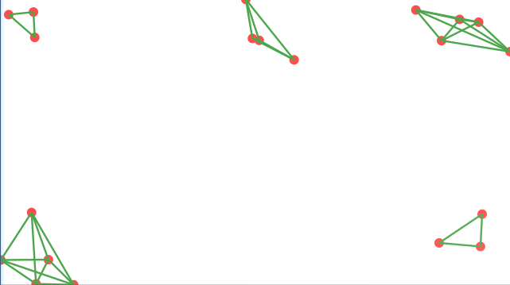
Une première remarque qu’on peut se faire, c’est qu’on calcule beaucoup de distance : il y a des distances inutiles. En effet, pour calculer la taille des composantes connexe, on n’a pas besoin de les calculer en ’détails’. Cela est justifié par le faîte que s’il existe juste une liaison entre un point A et un sommet d’une composante connexe alors A appartient à cette composante connexe ; il est inutile de calculer la distance entre A et les sommets restants.
Pas besoin de faire une mesure de performance pour savoir que notre algorithme n’est pas efficace (surtout que notre algorithme ne fait que dessiner des segments et ne calcule pas la taille des composantes connexex)
DBSCAN veut dire Density-Based Spatial Clustering of Applications with Noise. Étant donné un nombre de points, une distance et un seuil M l’algorithme regroupe les points dans des Clusters s’il existe un chemin de chaque point à l’autre et si le nombre de points dans le Cluster est supérieur à M.
Dans le schéma les points en rouge A, c’est le Cluster. Les points en jaune C, B sont en train d’être découverts par le cluster. Le point bleu N est du bruit, car le nombre dans le Cluster contenant N est inférieur a M. Par la suite et pour répondre au problème posé, on fixe
M = 1 .
Les etapes de l’algorithme avec M = 1 sont les suivantes :
On a décidé d’implémenter l’algorithme de façon itérative et en l’adaptant pour qu’il renvoie directement la taille des clusters.
Les fonctions sont donc :
L’algorithme présenté dans 2.3 possède plusieurs problèmes. Cependant on remarque que ce qui influe le plus sur la complexité et le temps d’exécution c’est la fonction recherche_voisin.
En fixant le nombre de composantes connexes à 3, et en ne variant que le nombre de points dans le create_test (Voir 1.1) on obtient les courbes de performances suivantes.
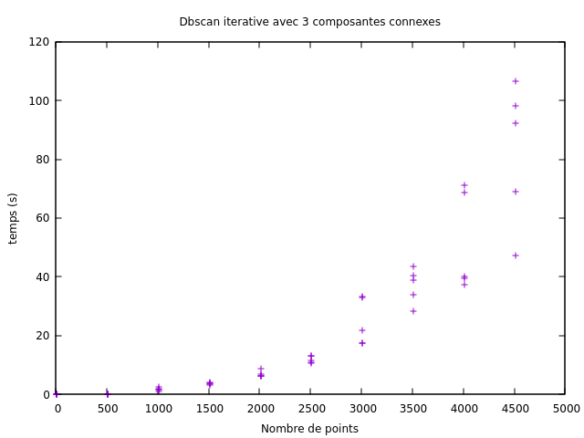
On remarque que notre meilleur cas commence à avoir l’allure d’une droite pour des valeurs plus grande que 3 000 points. Dans le pire cas, la courbe a l’air en O(nα) avec α > 1 (on se doute évidemment que α = 2).
Pour fixer les idées, nous allons considérer la complexité en moyenne. Pour cela, on reprend les mesures précédentes et on remplace chaque groupe de points alignés verticalement par un point correspondant a la moyenne arithmétique.
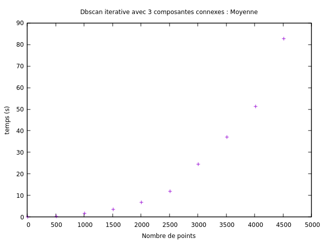 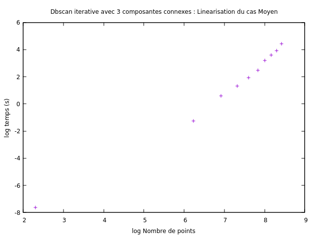
La régression linéaire donne un coefficient de corrélation de 0,99. On a donc bien une droite. On en déduit de B = 1.94 que le cas moyen est en O(n2).
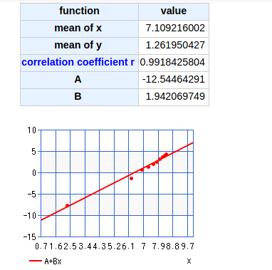
À présent, on fixe le nombre de points à 2000. Ce qui varie, c’est le nombre de composantes connexes. Les performances sont affichées ci-dessous avec le cas moyen.
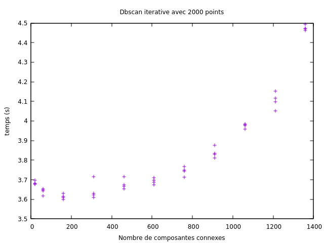 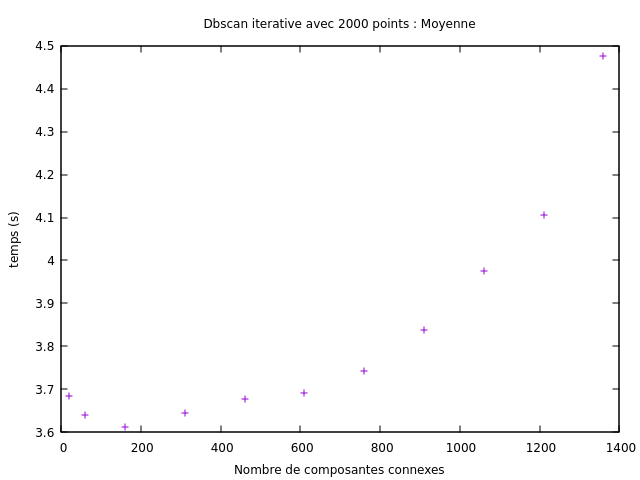
On remarque l’existence d’une valeur critique minimale tel qu’après cette valeur le temps est un O(k2) avec k le nombre de composantes connexes. En effet, pour un grand nombre de composantes connexes ou un nombre de composantes petit l’algorithme devient couteux.
Comme on a pu le remarquer précédemment le problème vient principalement de la fonction qui recherche le voisinage d’un point donné. Pour résoudre cela, il faut trouver une manière plus rapide et plus efficace de calculer le voisinage d’un point.
L’idée est de combiner l’algorithme précèdent avec une autre fonction recherche_voisin qui utilise les Arbres Kd pour calculer plus rapidement le voisinage.
L’arbre kd est comme son nom l’indique une structure de donné qui permet de partitionner l’espace avec des points de k dimension. Dans la suite, on confondra les arbres kd et les arbres 2d.
Chaque point divise l’espace en deux sous-espaces. Pour simplifier l’explication plaçons nous dans un plan. Un point (xp,yp) divise le plan selon Oy. Les points (x,y) d’ordonné tel que xp > x sont stockés dans la branche gauche de l’arbre kd et les points xp ≤ x dans la branche droite. Le prochain point (xp′,yp′) divisera le plan selon Ox et ainsi de suite.
Étant donné un nuage de points (xi,yi) il y a plusieurs moyens de choisir les points qui divisent l’espace _splitting point_ dans notre arbre : on choisit la méthode tel que chaque splitting point possède la médiane comme coordonnée selon x ou y. Les points donnés sont donc les feuilles de l’arbre inséré selon les règles mentionné ci-dessus.
Appliquons cette construction à notre exemple de la section 1.1 :
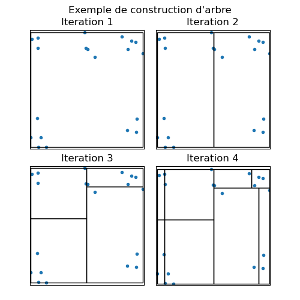
Ainsi, cette structure permet d’éviter de calculer la distance entre les points éloignés.
Même si j’avais une structure d’arbres kd qui fonctionne j’ai décidé d’arrêter cette approche. En effet, même si cette idée va fonctionner, le codage en python s’avère particulièrement pénible. Cependant à titre de comparaison avec l’algorithme ou le recherche de voisinage se fait de manière brut je fournie une comparaison entre les deux avec l’option cprofile de python3.
Le module scipy.spatial nous fourni une fonction calcul de voisinage faite avec Python.
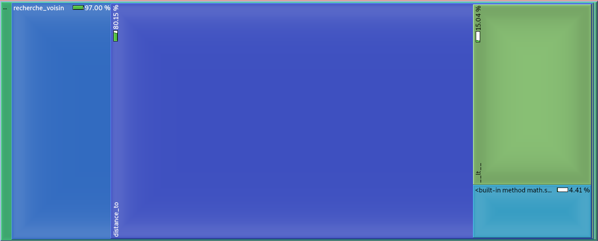
(b)
Algorithme
sans
Arbre
kd
Ainsi l’utilisation des arbres kd permet de réduire significativement le temps de l’algorithme. En effet, sur les figures, on voit que ca passe de 97% a 25%. Sans oublier que le calcul de la distance avec distance_to (fonction fournie dans le module geo) n’est pas le plus rapide (80.15%).
L’utilisation améliore potentiellement la complexité dans certains cas et rend le programme plus rapide. Cependant la complexité moyenne reste la même : en effet même si on sait calculer le voisinage d’un point plus efficacement, pour répondre au problème il faut trouver les voisins de chaque point et revenir au principe d’un DBSCAN en marquant si le point a été visité ou non. Ainsi, la complexité est en O(N2) toujours (N nombre de points).
Une méthode d’améliorer est de faire un diviser pour régner. Dans notre cas, diviser est simple : soit avec des Arbres Kd de nouveau ou avec une division en ’petit carré’ de l’espace. Pour retrouver le résultat final une structure nommée Union Find sera utile.
La compléxité de notre algorithme sera dans quelque cas en O(Nlog(N)) (N nombre de points).
Cependant si on a un nombre N tres grands et un nombre de composantw connexe CC petit (mais non égal a 1) cette approche ne sera plus efficace :
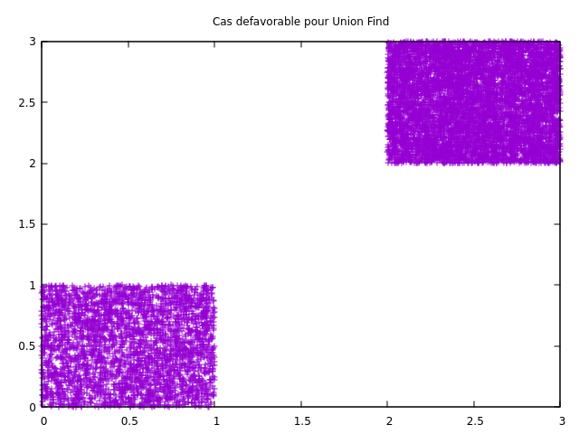
En effet dans la figure de dessus, on a deux ensembles de points en mauve. Si d = 0.5 on aura deux composantes connexes. Dans ce cas (cas non-rare et fréquent) notre algorithme est en O(N2). Une manière de s’en convaincre est de penser comme se suit :
Pour cette raison, je n’ai pas développé un algorithme avec Union Find même s’il est plausible de résoudre ce cas particulier en regardant le barycentre par exemple ...
Le problème avec les versions précédentes, c’est qu’on commence à chercher depuis tout l’ensemble de points. Un prétraitement des points pourra être utile pour qu’on ne regarde qu’un sous-ensemble de relations entre les points donnés. L’idée est de faire le lien avec le cours de recherche opérationnelle.
Pour cela, notons notre ensemble de points V . On imagine qu’on les lie tous (même si en pratique, on ne va pas faire ca). On aura un ensemble d’arêtes E. A chaque arête de E on lui associe son coût comme étant sa longueur euclidienne. On défini alors le graphe G = (V,E).
Définition 1. Un arbre couvrant minimum euclidien ou EMST est un arbre couvrant minimum pour un graphe dont le coût des arêtes est la distance euclidienne
L’idée est de chercher les composantes connexes dans l’EMST du graphe. En effet on a la proprieté suivante sur les arbres couvrants :
Démonstration. (pseudo preuve)
Sois une arête ei de l’EMST. On note C le cycle formé par cette arête et d’autres arêtes non-présentes dans l’EMST. En se rappelant que l’EMST est un arbre couvrant minimum, une propriété qu’il possède est que chaque arête de C possède une longueur supérieure à celle de ei.
On en déduit que : s’il existe un chemin dans G tel que toute arête possède une longueur inférieur a dmax alors il y a un chemin dans l’EMST avec cette même propriété
Fin de la Preuve __
La question reste comment trouver un EMST du graphe. Pour cela, on utilise un théorème fondamental dans ce projet.
La triangulation de Delaunay est une triangulation (relie les points pour former des triangles) telle que chaque point P du graphe soit à l’extérieur de tous les cercles circonscrits aux triangles de la triangulation.
La construction de la triangulation de Delaunay utilise un calcul de déterminant pour savoir si le point est à l’extérieur au cercle circonscrit ou non. L’implémentation est difficile et nécessite un algorithme diviser pour régner et de nombreuses astuces (flipping algorithm : on génère une triangulation et on flip les arêtes pour avoir une de Delaunay). Cependant le module scipy.spatial propose de faire une triangulation de Delaunay.
Le principe de l’algorithme est donc le suivant :
L’algorithme est illustré par le schéma suivant :
Dans l’Étape 1, on vous montre les points, dans l’Étape 2 on fait la triangulation de Delaunay sur ces points, dans l’Étape 3, on enlève les segments de longueur plus grande que dmax et dans l’Étape 4, on fait le parcourt en profondeur sur le graphe.
On commence par donner une propriété utile :
Dans cette partie, on fixe le nombre de composantes connexes. On fait varier le nombre de points. La distribution des points dans le plan est considérée à ce stade aléatoire. Les coordonnées x et y sont générées avec random.random() de python3.
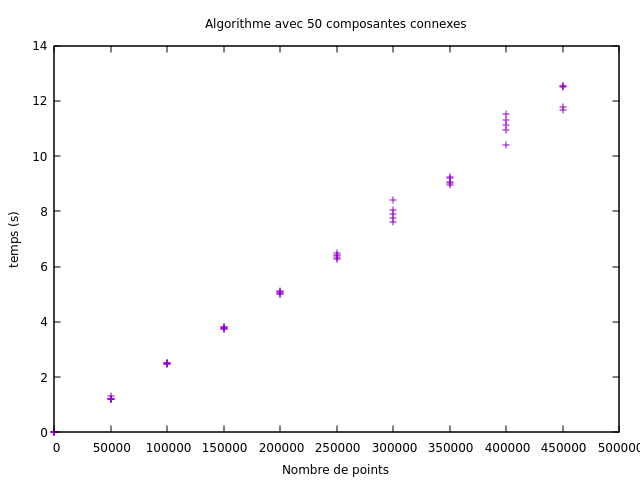 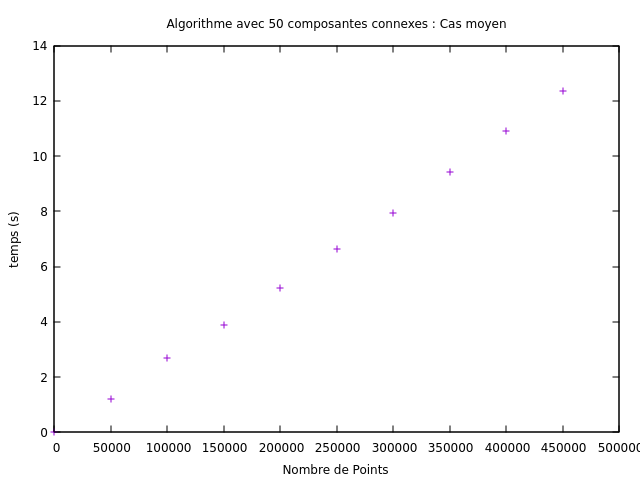
Même si les points semblent être parfaitement alignés la complexité est en O(Nlog(N)). En effet le temps d’exécution T de notre algorithme s’écrit comme :
T = 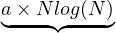chercher la triangulation de Delaunay + 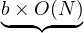Parcourir les triangles et enlever les points éloignés + 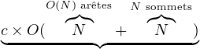Parcours en profondeur
RQ : On a O(N) arêtes d’après la proposition 4
Cependant et vu la distribution aléatoire des points, chercher la triangulation de Delaunay se fait rapidement. Ainsi, on a b >> a ou c >> a. Il est difficile de voir alors le Nlog(N).
On cherche maintenant a faire en sorte que le a de la section précédente domine. Si tel est le cas on pourra voir un NlogN.
Pour cela utilisons le théorème suivant :
Théorème 5. Le pire cas du calcul de la triangulation de Delaunay, sans diviser pour régner, est en O(N2). N étant le nombre de point.
Ce pire cas est réalisé quand les points sont sur le même coté d’une parabole. Donc on a affaire à des points de la forme :
(x1,x12),(x2,x22),...,(xN,xN2) avec les xi de même signes.
Démonstration. (pseudo preuve)
On trie les points par abscisse croissante. x1 < x2... < xN. Cela est possible, car on a un nombre fini de points.
On suppose que la triangulation de Delaunay a été faite pour (xi+1,xi+12),(xi+2,xi+22),...,(xN,xN2). On la note Di+1. On veut ajouter (xi,xi2) à cette triangulation Di+1.
Pour cela considérons (α,β,γ) ∈ {x1,...,xi-1}3 tel que α < β < γ. Soit Cle cercle circonscrit au triangle de sommet (α,β,γ).
Le point (xi,xi2) est dans C ssi V = det(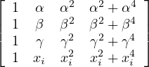) = 0.
Le calcul avec la calculatrice donne V = (α+β +γ +t)×(α-β)×(α-xi)×(α-γ)×(β-γ)×(β-xi)×(γ-t)
Vu que les points sont distincts on a V ≠0. Les (α,β,γ) étant quelconque, on en déduit que (xi,xi2) est à l’extérieur de tout cercle circonscrit aux triangles de la triangulation. Ajouter le point (xi,xi2) ajoute donc N - i cotés à la triangulation Di+1.
Ainsi passer de la triangulation DN à Di nécessite l’ajout de ∑ i=1N(N - i) = O(N2). C’est d’ici dont vient notre complexité quadratique.
Fin de la preuve __
On présente une illustration graphique du théorème :
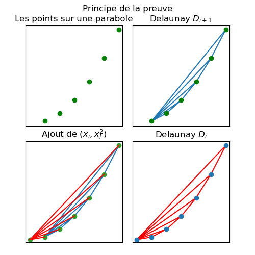
Dans notre test, il suffit alors lors de la génération des points aléatoires de créer aléatoirement une abscisse x et en déduire y = x2 par exemple.
Le théorème 4 assure que la complexité de la création de la triangulation sera en O(N2) s’il n’y a pas de diviser pour régner. Cependant l’algorithme de scipy.spatial utilise un diviser pour régner avec de nombreuses astuces. La complexité sera alors en O(NlogN). On fixe le nombre de composantes fortement connexes (cfc) à 2.
10000, nbre_de_point) start = time.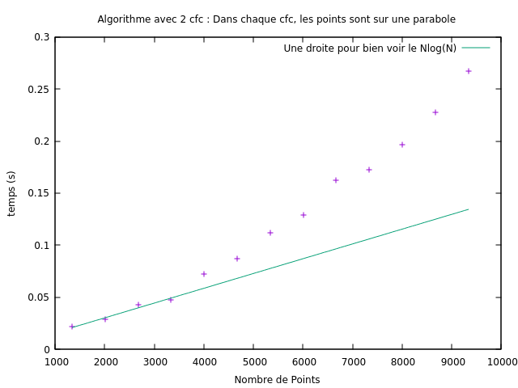 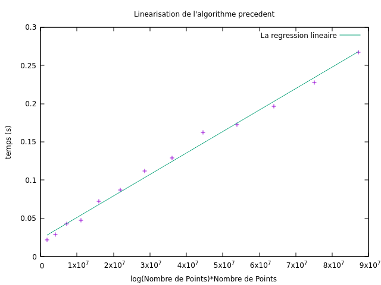
Dans cette partie, on fait varier le nombre de composantes connexes. Dans un premier temps, fixons le nombre de points a 50 000.
La force de cet algorithme avec la triangulation de Delaunay, c’est qu’il est indépendant du nombre de composantes connexes.
En effet, la fonction pour calculer la triangulation de Delaunay ne dépend que du nombre de points et leur distribution dans le plan.
La fonction qui enlève les points éloignés ne dépend que du nombre de triangles formé par la triangulation de Delaunay.
Le parcours en profondeur dépend du nombre de sommets (= N) et du nombre d’arêtes. (= O(N) (proposition 4)).
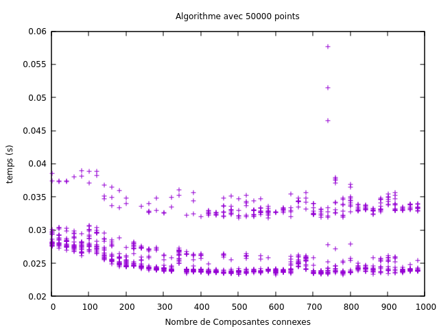 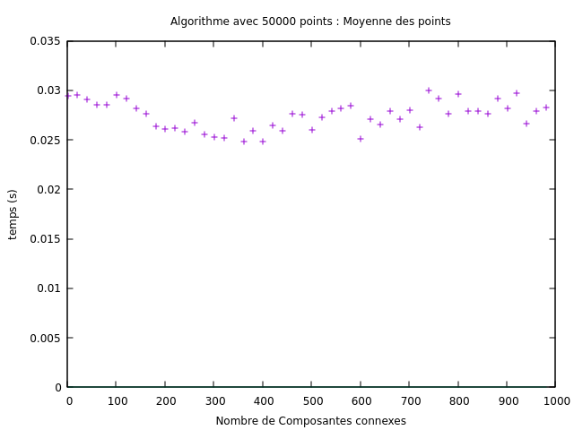
En faisant varier à nouveau le nombre de points, on peut aussi tracer un schéma comme celui de dessus pour s’en convaincre.
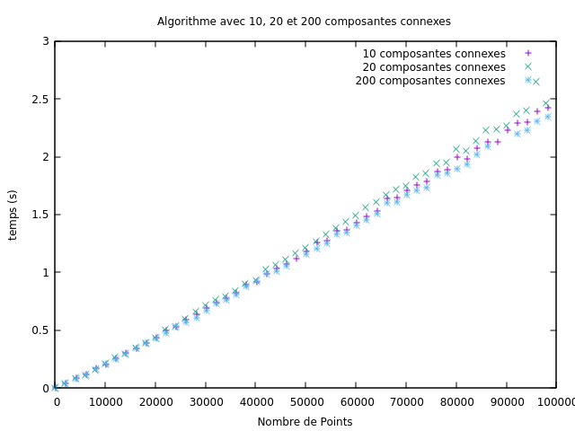
On peut remarquer l’entremêlement des points vers 40000 puis l’inversion de l’ordre de ces points vers 70000.
Une représentation possible est en 3D en faisant varier le nombre de points et le nombre de composantes fortement connexes (cfc) en même temps.
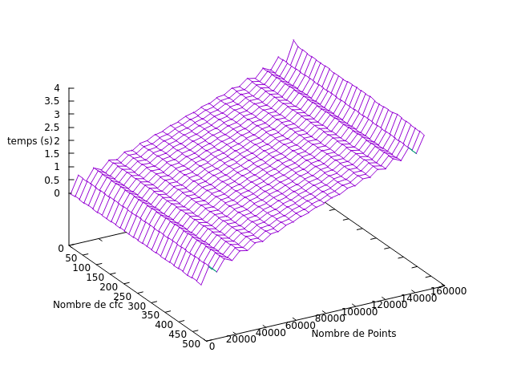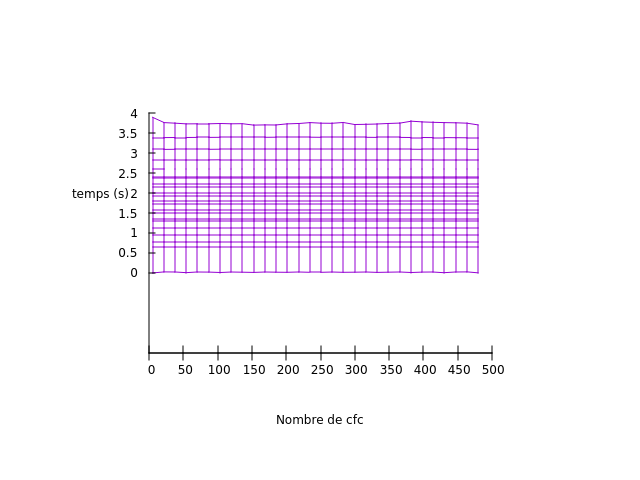
En projection sur le plan, on voit des lignes horizontales. Cela rejoint l’idée d’un temps constant en fonction du nombre de composantes connexes.